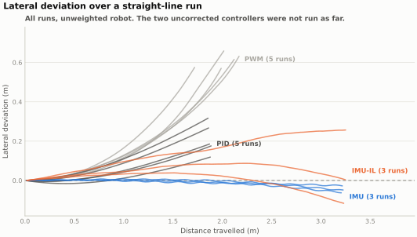
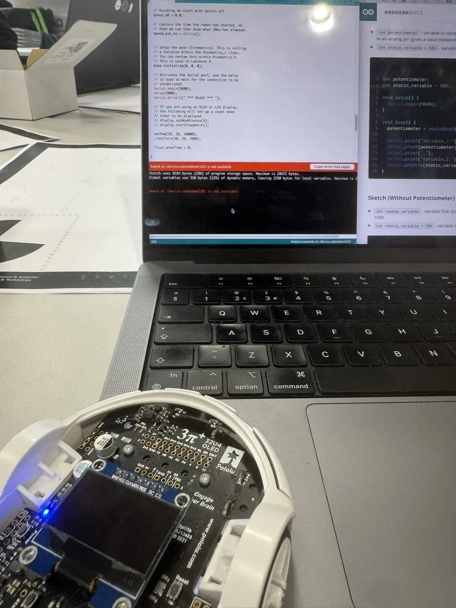
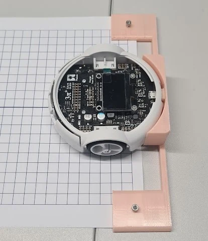
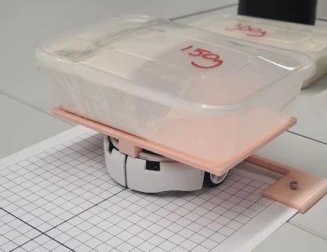
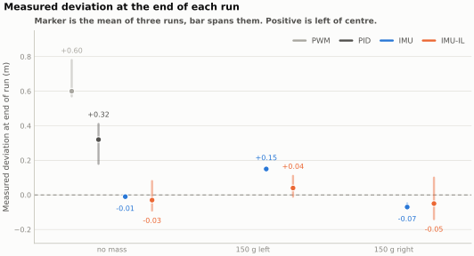
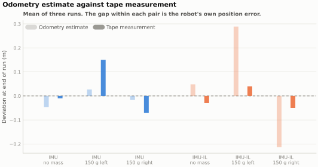

Embedded control · Applied machine learning
Straight-line control on a differential-drive robot
Give a small differential-drive robot the same command on both motors and it curves. We compared four ways of correcting that, ending with a network trained on the robot itself to copy the best of the others. Fusing two heading sources solved it. The learned controller didn't improve on that, because the heading estimate it was trained to copy was itself drifting.

The problem
Give two nominally identical motors the same PWM and the robot curves. Ours curved left, about 0.6 m off the line over a two-metre run, and there was nothing wrong with it. That's what manufacturing tolerance, tyre wear and an uneven floor add up to.
Correcting it isn't difficult in itself. The harder part is that a gain you tune on the bench won't survive a payload sitting over one wheel, so we worked up from the crudest controller to one that learns its own correction, measuring the same thing at every step: how far off the line the robot ends up.
Four controllers
- Open-loop PWM. The same duty cycle to both motors, as a baseline to show the size of the problem.
- PID per wheel. Closed loop on wheel speed from the encoders, with gains tuned by Ziegler-Nichols. It corrects the motors against each other, which isn't the same as driving straight, and it only halved the drift.
- Fused-heading correction. Steering on heading instead of wheel speed, where the heading comes from odometry corrected by the gyro. The gyro is noisy but it sees real rotation, and odometry is smooth but blind to slip. Neither is usable on its own.
- A network trained on the robot. Five inputs, one hidden layer of six units, 43 parameters, running in a 30 ms control step on the ATmega32U4 alongside everything else. It's first trained by copying the fused-heading controller's steering commands, then tuned online against a shaped score. The trained weights are written to EEPROM, so a policy survives a power cycle.
How it was measured
The robot reports its own position from odometry, and odometry is the thing under test, so the primary measurement had to come from outside it. Graph paper ran the length of the track, a 3D-printed jig set the robot on the same starting pose every time, and the finishing offset was read off the paper with a tape. We logged odometry as well, and keeping both turned out to matter more than I expected.



What happened
The escalation helps up to a point. PID roughly halved the open-loop drift, and fusing the two heading sources removed almost all of it. Unweighted, the robot finished within a centimetre or two of the line, run after run.
The learned controller didn't beat that. Unweighted it finished about 0.03 m off against 0.01 m, and its runs were much less repeatable. It only came out ahead under load, where 150 g over one wheel put it around 0.05 m off the line against 0.11 m for the fused-heading controller.

Where the error came from
Comparing what the robot's odometry reported at the end of a run against the tape measurement, the two disagree by up to a quarter of a metre. That gap is the robot's own position error, and odometry is the signal the controller was steering on.

The fusion weights odometry heavily, since the gyro only contributes a small correction term instead of an equal vote, so the fused heading inherits odometry's slow drift. The network was then trained to copy a PI controller running on that same estimate. It learned, correctly, that odometry predicts the expert's output, however it also learned to ignore the disagreement between the two sensors, and that was the one input that could have told it the estimate was going wrong.
That's a problem with the training signal rather than with the network. Two changes would be worth trying. Weight the gyro more heavily in the fusion before generating any training data, and train over a distance long enough for the drift to show up in the score. Our runs were about three metres, and that's roughly where the divergence starts.
What I'd take from it
The learned controller was the part of the brief I was most interested in, and it isn't what fixed the problem. Straight-line driving got fixed by noticing that two mediocre heading sources fail in different ways, then combining them. We only saw that because we measured from outside the robot instead of trusting its own odometry.
The result went against our hypothesis, which is only worth much if you can point at a cause. Here the cause is visible in the odometry comparison above, and that's the part of the work I'd stand behind.
Credit
This was a three-person study for the Robotics Systems unit, with Callum Edwards and Leon Weyrich. I wrote the embedded control stack, which covers the drive loop, the odometry-gyro fusion, the PI expert, calibration and logging. I designed and built the test setup and ran the experiments. The neural policy and its online tuning phase are largely Leon's work, and the analysis and report were shared.
The submitted report is titled around reinforcement learning. The implementation is imitation learning from a PI expert, followed by a tuning phase with no exploration, so it isn't estimating a policy gradient. I've used the more accurate description throughout this page, and the repository explains the difference against the code.
← All projects